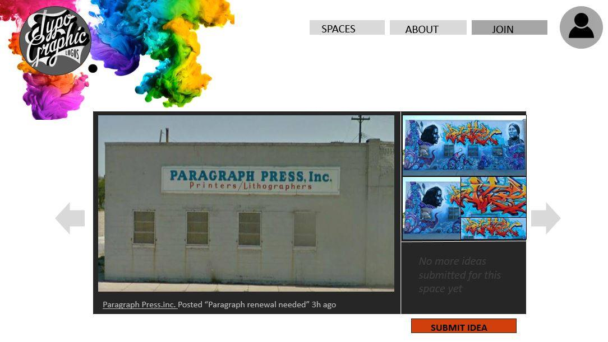

Prototyping
Deliverable: A blog post containing the wireframes of the template for the interface, high-fidelity mockups (built with PowerPoint, Photoshop, Keynote, or equivalent software), and a mood board that inspired the design.
How might we develop a platform that highlights the opportunities for street artists so that legal street art is encouraged?
Our idea for our website is to connect street artists with commissioners and places where artists can legally display their artwork.
Project Explanation
This is a brief explanation on the specifics of what we want for our website as of now. Both artists and commissioners or people with legal places create a profile for themselves. Commissioners/others can upload places available for artists to do their art. On this “places” page, artists are able to submit their ideas or art to the page, and the commissioner review all the submissions and offer the space to an artist with the best designs, with or without a commission.
Mock-ups
This week, are goal is to create wireframe templates for the interface and high-fidelity mock-ups. To begin the creative process, each person in our group created moodboards on what we thought would be good inspiration to designing the website.
We then got together and discussed what we liked and disliked about each moodboard created, and settled on moodboard number three to be our source of inspiration.
The main reason we chose this moodboard was because we liked its colour scheme. Consists mostly of black, white, and greys, which is neutral and simple. The pictures that will be uploaded will provide a splash of colour, which will draw the users attention to the photos, which is ideal as the art is the focus of the site.
We went on to talk more specifically about the website. It was clear that the website should focus on three core functionalities: sign up/login, offering spaces, and submitting ideas.
With that in mind, we agreed on the main pages we wanted our website to have.
- Landing Page
- Spaces
- Project Page
Landing Page

This is the first page users will see when they go to the site.
Spaces
This page provides a list of all the spaces available for artists. We plan to separate the different types of projects (commissioning work, and free spaces) into two lists, and include a map with geo-tagged locations, and a filtering feature to search for spaces that suite artists needs.
Project Page
There will be a page for each individual “Space” listed in the spaces page. It will include photos of the space, a map showing its location, a description, and all the submissions from artists that users can scroll through (resembling a newsfeed). This is where artists can submit their own work to the space.
Some other pages we may want to include is a profile page for each user, an “About” page that explains the purpose of the site, and a simple join page where users can sign up or login.